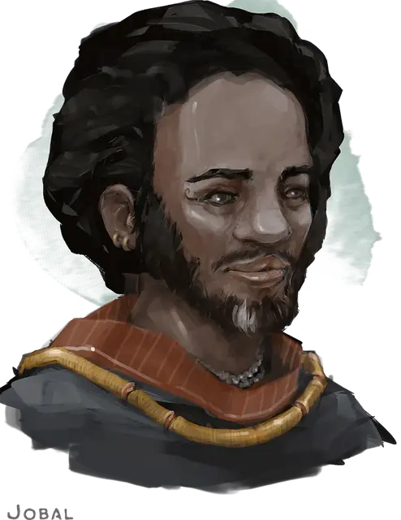

Джобал
Jobal
Средний Гуманоид (Человек чультец), нейтрально-злой, именной НИП

Класс Доспеха 13 (кожаный доспех)
Хиты 16 (3к8 + 3)
Скорость 30 футов
| мод | спас | ||
|---|---|---|---|
| СИЛ | 11 | +0 | +0 |
| ЛОВ | 14 | +2 | +2 |
| ТЕЛ | 12 | +1 | +1 |
| мод | спас | ||
|---|---|---|---|
| ИНТ | 11 | +0 | +0 |
| МДР | 13 | +1 | +1 |
| ХАР | 11 | +0 | +0 |
Навыки Восприятие +5, Выживание +5, Природа +4, Скрытность +6
Чувства пассивное Восприятие 15
Языки Общий
Опасность 1/2 (100 опыта)
Бонус мастерства +2
Особенности
Острые зрение и слух. Джобал совершает с преимуществом проверки Мудрости (Восприятие), полагающиеся на зрение или слух.
Действия
Мультиатака. Джобал совершает две рукопашные атаки или две дальнобойные атаки.
Короткий меч. Рукопашная атака оружием: +4 к попаданию, досягаемость 5 футов, одна цель. Попадание: Колющий урон 5 (1к6 + 2).
Длинный лук. Дальнобойная атака оружием: +4 к попаданию, дистанция 150/600 футов, одна цель. Попадание: Колющий урон 6 (1к8 + 2).
Описание
Джобал заработал состояние на том, что был проводником у группы, которая обнаружила гору чультского золота
и драгоценностей. Каким-то чудом только Джобал сумел выжить после встречи с нежитью и динозаврами, вернувшись в Порт Нянзару в каноэ, наполненном сокровищами. Нет сомнений, что его жизнь полна приключений. Его тело украшают шрамы от многих походов. Его главный шпион, доверенное лицо и советник – Аазон Талиери [Aazon Talieri]. Джобал безоговорочно ему доверяет, а лояльность Аазона безупречна.
Поскольку Джобал работает с исследователями, он крайне заинтересован в картах Чульта. Он заплатит огромные деньги за карту Синдры Сильван если узнает о её существовании. Если персонажи откажутся продавать карту, то он прибегнет к воровству или даже убийству.